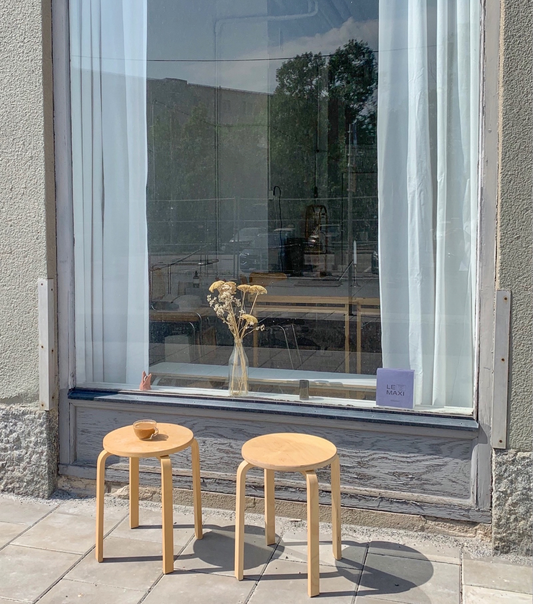
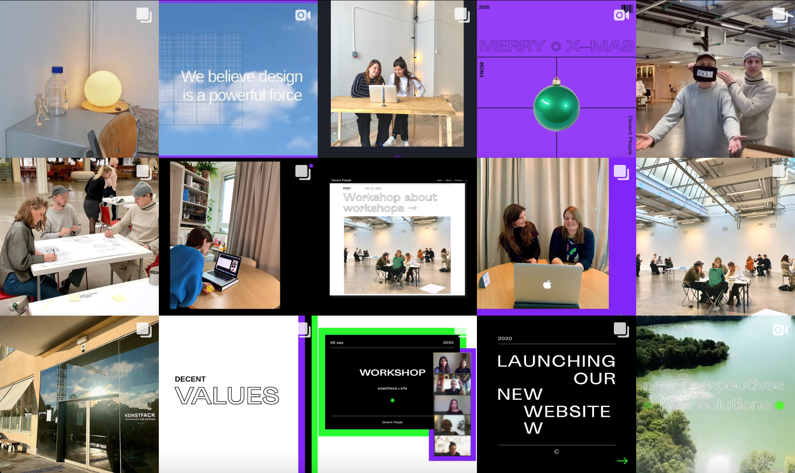
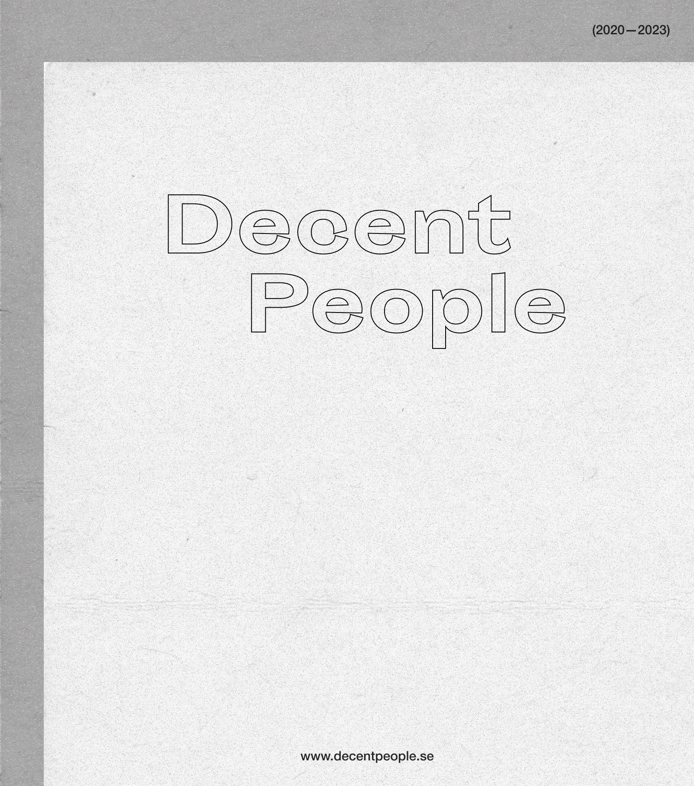

Not perfect. Just decent.
DECENT PEOPLE started at Hyper Island, where Felicia and I realised we worked really well together - and decided to take the leap. The name was a statement to challenge perfectionism and the paralysis it creates. We believed the threshold for starting, shipping, trying something, should be lower.
We built a practice that was genuinely collaborative: ran design sprints, facilitated workshops, took on UX projects, and taught at Konstfack and Hyper Island. The work ranged from e-commerce to health support systems - what connected it was always the same question: what do people actually need, and how early can we test?
The studio ran until 2023. It was the right ending - unhurried, on good terms, with work we were proud of behind us.

WHAT WE DID
Our approach was shaped by the nature of each project, but the underlying commitment stayed the same: understand real needs, test early, and shape ideas that make sense in the world they'll actually live in.
- Design sprints — structured frameworks to align stakeholders, prototype ideas, and pressure-test solutions before anyone builds the wrong thing.
- Workshops & facilitation — collaborative sessions for organisations and schools, including Konstfack and Hyper Island.
- UX projects — end-to-end design work for digital products and services: research, concept development, prototyping, and testing.
- Lectures — hands-on sessions bringing design thinking into organisations navigating change.

SELECTED WORK
- Exhibition workshop — a co-creative process shaping immersive visitor experiences for Handarbetets Vänner.
- E-commerce for active wear — a user-centered shopping experience designed around how people actually move and buy.
- Support system for schizophrenia — a service design project exploring what meaningful, human support looks like for people living with the condition.
- Pregnancy health app — a digital tool helping women navigate their own health data through pregnancy, on their own terms.
- Covid-19 design challenge — a rapid-response concept developed with IBM addressing critical healthcare coordination needs during the 2020 pandemic.
